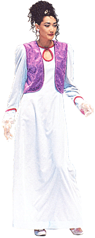

LA
CREATRICE

Maître Suprême Ching Hai
L'ORIGINE DES VÊTEMENTS
CÉLESTES S.M.
De nombreux disciples de Maître Suprême Ching Hai sont des créateurs et
des modèles qui travaillent dans l'industrie de la mode et du vêtement
et qui sont attentifs aux tendances dans ce domaine. En voyant les
Vêtements Féeriques dessinés par Maître Suprême Ching Hai, ils sont
tous tombés en admiration devant Son talent extraordinaire. Pour
répondre à leur demande et parce qu'Elle désire partager la beauté avec
le monde, la ligne de Vêtements Féeriques S.M. est lancée.S.M. signifie 'Supreme Master'. Le logo est rouge et or, le rouge symbolisant le corps physique et le fil doré symbolisant le rayonnement intérieur du Royaume de Dieu. Il est brodé sur chaque Vêtement Céleste S.M. et est partie intégrante de la ligne de vêtements. Ce logo est destiné à nous rappeler notre quête spirituelle et la noblesse de notre nature originelle.
PRÉSENTATION
Une créatrice exprime ses idées et son inspiration, pour communiquer au monde son sens de l'art et de la beauté. Elle est comme un architecte qui dessine un bâtiment avec le plus grand soin de façon à ce que l'ensemble de l'édifice, son apparence extérieure et la qualité de son intérieur, donne à ses habitants sécurité et confort. Les Vêtements Célestes S.M. sont d'une douceur extrême. Toutes les parties en contact avec le corps sont doublées avec soin pour le confort. Maître Suprême Ching Hai a choisi elle-même les tissus au cours de Ses voyages aux États-Unis, en Thaïlande, à Hong Kong, en République de Chine, etc. Elle est très exigeante en ce qui concerne les couleurs et la qualité des tissus.Maître Suprême Ching Hai est d'avis que si l'on veut atteindre la perfection dans la création d'un vêtement, il faut considérer consciencieusement ce que ressent celui qui les porte. Tous les efforts sont faits pour s'assurer que le propriétaire aimera, chérira, et attachera une grande valeur aux vêtements. C'est seulement alors que le créateur pourra s'attribuer le mérite d'avoir accompli sa tache.
L'innovation la plus révolutionnaire dans la création de Maître Suprême Ching Hai est de rendre visible la doublure intérieure lumineuse. Les étoffes des doublures ont été spécialement sélectionnées pour mettre en valeur l'aspect général du vêtement. Le toucher et les couleurs des doublures sont de la plus haute qualité, comme celle de la soie indienne. Leurs couleurs éclatantes et ravissantes rehaussent le tissu extérieur. Le tissu intérieur est souvent en fort contraste avec l'extérieur, faisant allusion à la beauté qui brille de l'intérieur. Même lorsque les tissus extérieurs sont simples, ils deviennent superbes avec le contraste du tissu intérieur. Lorsqu'une brise fait bouger la robe, on aperçoit la doublure qui offre une soudaine sensation de beauté, nous rappelant ainsi que notre qualité intérieure éclatante est la chose la plus importante et la plus belle qui soit. Un dernier point, mais non des moindres: tous les coins des vêtements sont arrondis, symbolisant l'harmonie et la flexibilité.

Ensemble de soie qui répond aux exigences des femmes actives occupées, leur permettant d'être efficaces et belles. Longueur des manches juste au-dessous du coude. Rose pâle/rose, pourpre/jaune et vert/ivoire.
Vêtements pour aller faire les courses, confortable, décontracté, tout en étant élégant. Les ensembles-pantalon en velours agate ont des combinaisons de couleurs délicates et harmonieuses.
Ensemble en soie pour femmes actives. De fines broderies décorent le haut. Une doublure en dentelle dépasse de la jupe légèrement plissée à la taille, à longueur des genoux. Vert forêt et jaune vif, blanc cassé et orange, blanc cassé et vert clair.
Ensemble trois-pièces 100% soie pour femmes actives. Les fentes sur les côtés, les boutons de manchettes d'un côté de la veste, et les boutons de tailles différentes son ravissants. Vert olive, gris argenté, violet et marron.
Robe de soirée décolletée, en velours, décorée au buste d'un brocart de velours qui ressemble à de la dentelle pour mettre en valeur la féminité. Ce modèle est disponible en violet, vert et bleu.
Décolleté en V pour cette robe de soirée en dentelle française dorée, à la fois classique et unique. L'ourlet des manches et la jupe de couleur vive, mettent le tout en valeur. Ce modèle existe en jaune, rouge et rose (couleurs de la ceinture).
 La splendeur et la grâce de cette robe de soirée attirera l'attention
de tous, en mettant en valeur la noblesse de la position de la femme en
tant que Mère de la terre. Argenté et doré.
La splendeur et la grâce de cette robe de soirée attirera l'attention
de tous, en mettant en valeur la noblesse de la position de la femme en
tant que Mère de la terre. Argenté et doré.Le noir est la couleur principale de cette robe de soirée. Un ravissant voile noir couvre l'encolure décolletée. La grâce des manches bouffantes et la splendeur de la jupe de couleur dorée, avec de petites fleurs noires, allège la lourdeur du noir.
La robe lotus : Les manches et la partie inférieure de la robe sont taillées en forme de fleur de lotus, symbolisant la pureté de notre nature intérieure.

La lumière brille à travers le voile de mousseline de cette robe arabe, couleur pastel. La beauté luit de l'intérieur vers l'extérieur ! Disponible en vert d'eau, rose, jaune et blanc.
Très original, cet ensemble pantalon de style indien, recouvert de mousseline translucide. Des boutons chinois ornent le haut. Une veste courte équilibre le style du pantalon. Rose vif, pêche et mauve. (Collection décontractée)
Gracieuse robe de soie, tombant aux chevilles, avec des talons plats, c'est une tenue de détente idéale. Les couleurs ajoutées donnent de l'élégance à ce tissu uni. Une écharpe lumineuse autour du cou donne une touche ravissante, Vert militaire, fraise profonde, violet pastel et bleu roi.
La tenue pieds de canard : dynamique et unique, cette tenue se distingue par la forme inhabituelle de ses manches et du bas du pantalon. Il reflète l'esprit créatif et aventureux de la femme moderne. Orange, blanc et bleu marine. Tissu synthétique.
Tenue de golf en coton, avec d'ingénieuses ouvertures sur le devant et en bas près de l'ourlet du pantalon pour la ventilation. Jaune clair et blanc, bleu marine et blanc, turquoise et blanc. Unique et frais!
LES BIJOUX CELESTES S.M.
OR PUR, PIERRES PRECIEUSES, ARTISANS ROYAUCes précieuses créations sont inspirées du paradis
Maître Suprême Ching Hai dit: "S. M. signifie Supreme Master. Ce symbole est gravé à l'intérieur de chaque pièce, nous rappelant que nous avons tous le pouvoir du Maître Suprême en nous." Les bijoux et les vêtements célestes dessinés par Maître Suprême Ching Hai créent une parfaite harmonie, propice au développement de la Vérité, la Vertu et la Beauté des Royaumes glorieux du Paradis.Nous sommes originaires du glorieux Royaume de Dieu où le sol est pavé d'or et les toits des habitations colorés de pierres précieuses d'une brillance extrême et d'une beauté extraordinaire, Comme nous nous sommes attardés trop longtemps dans ce monde. nos souvenirs se sont progressivement évanouis et nous en oublions même notre glorieuse demeure. Maître Suprême Ching Hai sert de Son talent artistique surhumain en utilisant de l'or, des diamants et des perles pour dépeindre l'ultime Vérité, la Bonté et la Beauté du Royaume du Paradis. Elle dit, "L'or symbolise notre qualité précieuse; les diamants symbolisent notre sagesse éternelle." L'ingéniosité de Maître Suprême Ching Hai nous ramène à notre Demeure céleste.
|
1 Vers
l'autre rive Collier, bague et boucles d'oreilles En pierres précieuse noires, diamant et or. |
 2 Le contact avec la force cachée Collier, bague et boucles d'oreilles En opales, diamants et or. |
|
|
Notre principal objectif est
l'esthétisme, vendre n'est pas le facteur
le plus important. L'important est de rehausser sa perception
esthétique et son style personnel à travers ces vêtements. Tous
les vêtements commandés son faits sur mesure. Nous vous ferons
avec joie des suggestions pour vous dire quels vêtements vous iraient
le mieux pour mettre en valeur et embellir votre silhouette.
Les sites officiels S.M.Celestial Co.,LTD sur la Toile
Les vêtements Celestial SM à Taïwan:
http://www.sm-celestial.com/
Les bijoux et vêtements Celestial SM aux États-Unis
http://www.sm-cj.com/